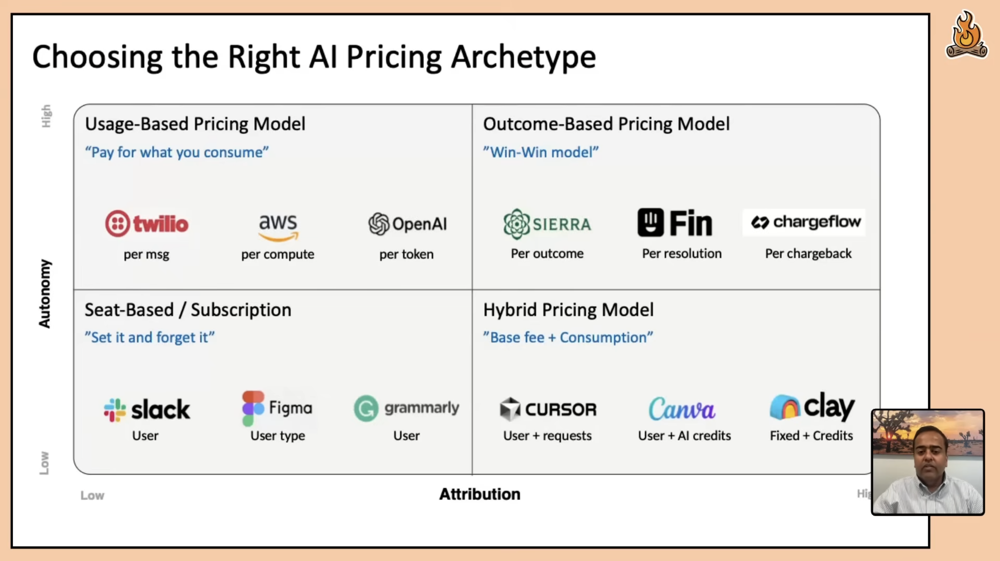

Revenue per employee
Revenue per employee is now the most important success metric, followed by revenue retention.
In the 2010s, startups often cited headcount growth as a success metric. I admit I played along. Back then, when I told people the startup I worked at had grown past 100 employees, they seemed impressed.
But headcount never really resonated with me as a measure of a company's success. Many startups hired and hired, fueled by seemingly endless venture capital, until they blew up. This practice accelerated until the post-2021 comedown, which ushered in an era of software company layoffs (see layoffs.fyi).
The new metric is revenue per employee. Public companies are increasingly facing investor pressure to reduce headcount while growing revenue. Lucrative 10-hour-a-week jobs at companies like Google are going away. Entry-level jobs are going away.
Meanwhile, tiny teams are capable of generating more revenue than ever. Because I'm a one-person company, my revenue per employee denominator is minimized; the challenge is growing the numerator.
There are a few implications to this shift in emphasis toward revenue per employee:
- Layoffs at tech companies will be a secular trend. They have started, and will continue at a regular pace as AI products mature and enterprises adopt them further. I don't know what the terminal point of this trend looks like.
-
Seat-based pricing models are under threat.
As headcounts shrink, employee accounts churn, reducing
revenue for seat-based products. As pricing guru Madhavan
Ramanujam recently shared on
Lenny's podcast, we should expect to see pricing models move toward a
higher-attribution, higher-autonomy model, where software is
priced by outcome (top right of this chart):
 - Small teams and companies-of-one have a window of opportunity. Big companies move slowly, and AI tools help small teams punch well above their weight. But this window is closing, as big companies shrink, adopt AI tools themselves, and reorganize around the new mode of software development.